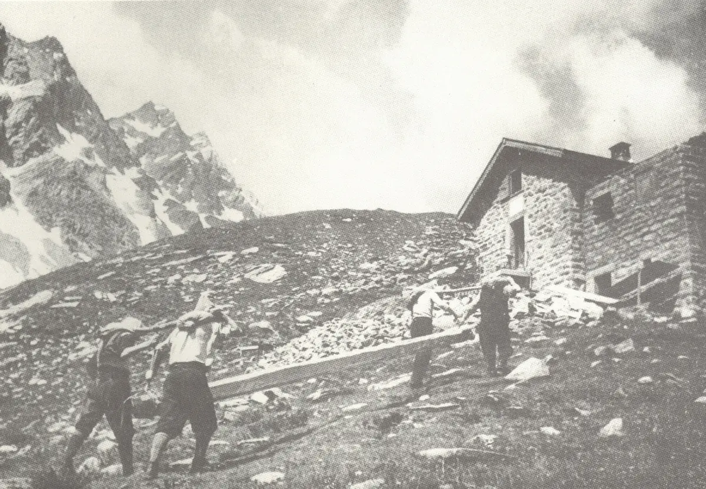
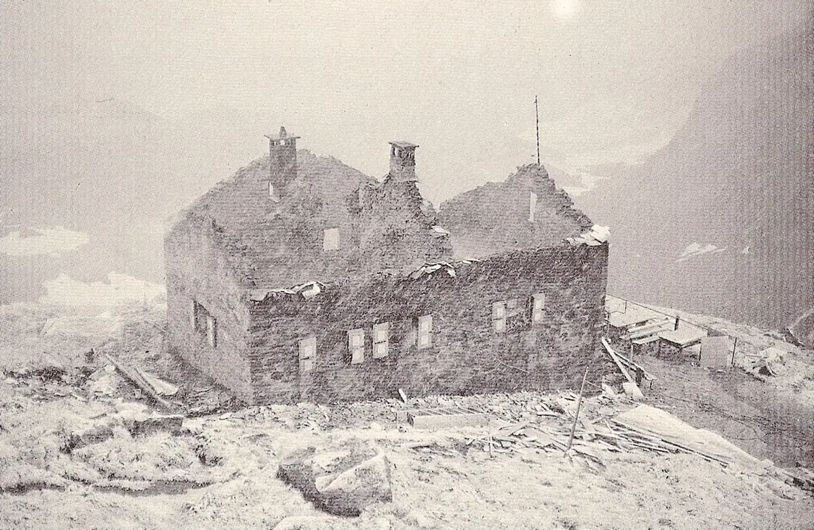

Histoire de la cabane
Depuis 1912, la première cabane des montagnes tessinoises : agrandie, détruite par un incendie et reconstruite plus belle qu’avant.

La cabane a été construite en 1912 au pied du sommet du même nom, côté Léventine, dans le haut Val Piumogna. Le nom Campo Tencia a été inventé en 1858 : on l’a donné à la plus haute montagne entièrement tessinoise (3072 m) lors de l’établissement de la célèbre carte Dufour. Il réunit les noms de deux alpages du Patriziato di Prato, Campo et Tencia, dans le haut Val Lavizzara, côté Val Maggia.
La cabane a été inaugurée le 11 août 1912 (le 10 août selon certaines sources d’archives). En 1932, Patocchi, toujours moteur du projet, présenta les plans d’un agrandissement, et l’été 1933 la nouvelle aile est fut construite.

Quarante ans plus tard suivirent d’autres travaux pour la renforcer et l’améliorer. Le 22 août 1975, un grave incendie détruisit le travail de nombreuses années.
Les travaux commencèrent aussitôt, et la cabane fut reconstruite plus grande, plus belle et plus pratique. Sa construction fut une première en Suisse, grâce à l’architecte Oscar Hofmann : non plus l’image anguleuse de la cabane de montagne classique, mais un aspect nouveau, léger et élégant, avec une structure porteuse en acier, revêtue et isolée pour l’altitude. La nouvelle inauguration eut lieu le 25 septembre 1977.

En 2008, l’aile nord a accueilli une nouvelle cuisine professionnelle. Le 11 août 2012, la cabane a fêté son centenaire. En 2022, une turbine hydraulique a été installée pour l’alimentation électrique, l’installation photovoltaïque agrandie et l’épuration des eaux usées renouvelée.